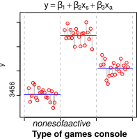
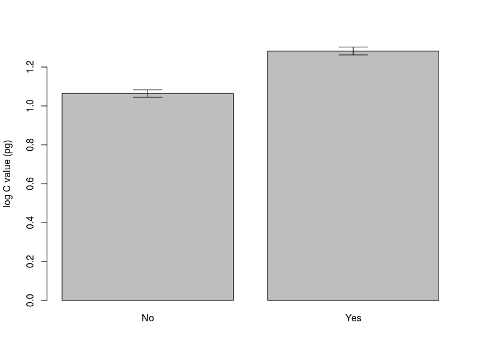
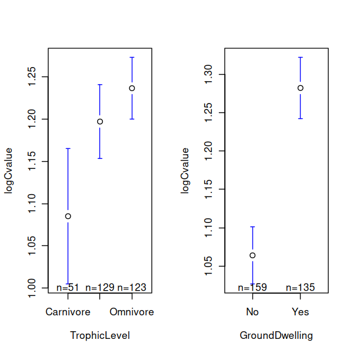
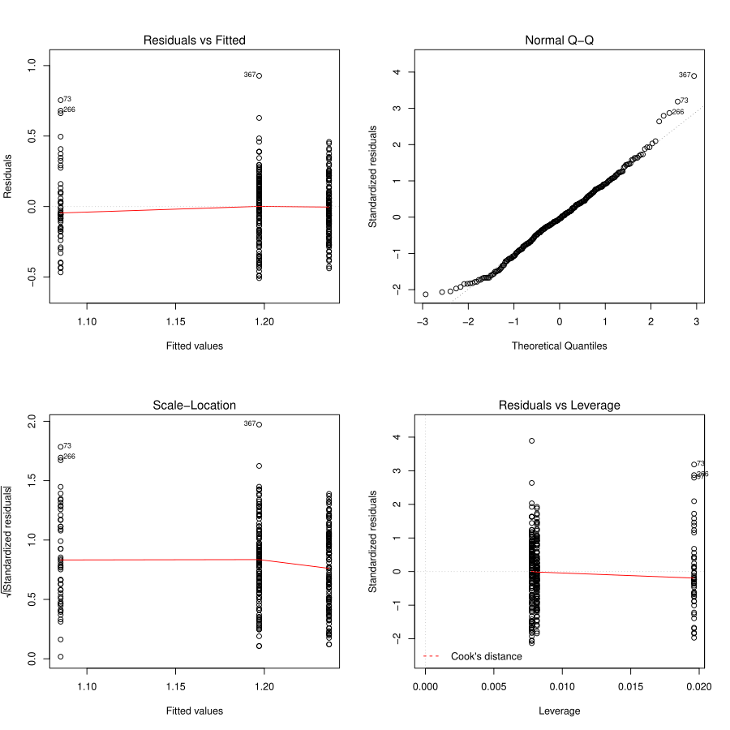

Linear Models: Analysis of variance#
Learning goals
By the end of this chapter you should be able to:
Understand one-way ANOVA as a generalisation of the two-sample t-test to multiple groups
Fit ANOVA models in R and interpret the ANOVA table (F-statistic, degrees of freedom, p-values)
Check assumptions (normality of residuals, homogeneity of variance) using diagnostic plots
Visualise group differences effectively with boxplots, mean ± SE plots, and coefficient plots
Conduct post-hoc pairwise comparisons (Tukey HSD, Dunnett) when the overall F-test is significant
Recognise when ANOVA is appropriate vs when alternative tests are needed
Prerequisites
Before starting this chapter, you should:
Have covered experimental design concepts and t-tests from t-tests
Have some linear model intuition from Regression — ANOVA is a linear model with categorical predictors
Be able to create and interpret boxplots in R
Introduction#
Start in your coursework project root. Create this chapter’s script as code/anova.R; when it is complete, run the whole analysis with Rscript code/anova.R.
Analysis of Variance, is very often a good choice if your response (dependent) variable is continuous, and your predictor (independent) variables is categorical.
In this chapter, you will learn to perform an anova, that is, fit this linear model to the data. Specifically, you will learn to[1]:
Visualize the data by plotting boxplots and barplots
Fit an anova to test whether certain factors can explain (partition) the variation in your data
Perform diagnostics to determine whether the factors are explanatory, and whether the Linear Model is appropriate for your data
Explore and compare how much the different levels of a factor explain the variation in your data
What is anova?#
Analysis Of Variance (anova) is an extremely useful class of Linear models. It is very often appropriate when your response (dependent) variable is continuous, while your predictor (independent) variable is categorical. Specifically, One-way anova is used to compare means of two or more samples representing numerical, continuous data in response to a single categorical variable (factor).


Fig. 30 A dataset where an anova is appropriate. Performing an anova on this dataset is the same as fitting the linear model \(y = \beta_1 + \beta_2 x_s + \beta_3 x_a\), where \(x_s\) and \(x_a\) are two levels (“treatments”, representing statistically separate populations) within the factor (games console ownership). Here, the first treatment, the control, is captured by the baseline value \(\beta_1\) (the sample with the lowest value, on the far left).#
(One-way) anova tests the null hypothesis that samples from two or more groups (the treatments or factors) are drawn from populations with the same mean value. That is, the null hypothesis is that all the groups are random samples from the same population (no statistical difference in their means). To do this, anova compares the variance in the data explained by fitting the linear model, to the unexplained variance (the null hypothesis.
In other words, in effect, anova asks whether a linear model with a predictor (or explanatory variable) with at least two categorical levels (or factors), better accounts for the variance (Explained Sum of Squares, ESS, see below) than a null model of the form \(y = \beta_1\) (Figure 1). Thus, anova is just a type of linear model.
By the end of this chapter, it will also make more sense to you how/why fitting a linear regression model to the data that we learned previously, of the form \(y = \beta_1 + \beta_2 x\) (where \(x\) is a continuous predictor variable), requires an anova to determine if the model better fits than a null model of the form \(y = \beta_1\).
Typically, one-way anova is used to test for differences among at least three groups, since the two-group (or levels or factors) case can be covered by a \(t\)-test (see t & F tests). When there are only two means to compare, the \(t\)-test and the F-test are equivalent; the relation between anova and t is given by \(F = t^2\).
An extension of one-way anova is two-way analysis of variance that examines the influence of two different categorical independent variables on one dependent variable — we will look at multiple predictor variables in the Multiple Explanatory Variables Chapter onwards.
Calculating the anova test statistic#
anova uses of the F-Statistic. To this end, an anova “partitions” variability in your data as follows:
Total sum of squares (TSS): This is the sum of the squared difference between the observed dependent variable values (the \(y\)’s) and the mean of the response variable (denoted by \(\bar{y}\)), i.e.,
TSS tells us how much variation there is in the dependent variable without having any other information (your null model). You might notice that TSS is the numerator of the sample variance (or it’s square-root, the sample standard deviation), which you learned about previously.
Explained sum of squares (ESS): Sum of the squared differences between the predicted \(y\)’s (denoted by \(\hat{y}\)’s) and \(\bar{y}\), or,
ESS tells us how much of the variation in the dependent variable our alternative (linear) model was able to explain by measuring variation in the modelled \(y\) values (the \(\hat{y}\)’s). In othjer words, it measures the reduction in uncertainty that occurs when the linear model is used to predict the responses.
residual sum of squares (RSS): Sum of the squared differences between the observed \(y\)’s (denoted by \(y_i\) for the \(i^{th}\) observation) and the predicted \(\hat{y}\), or,
RSS tells us how much of the variation in the dependent variable our model could not explain. That is, it’s the uncertainty that remains even after the linear model is used. The linear model is considered to be statistically significant if it can account for a large amount of variability in the response.
And of course, TSS = ESS + RSS. That is, the OLS method “decomposes” the total variation in the dependent variable into an explained component (ESS; explained by the predictor) and an unexplained or residual component (the RSS).
The sums of squares used to calculate the statistical significance of the linear model (regression, anova, etc) through the F value are as follows:
Type of Sum of Squares (SS) |
SS Calculation |
Degrees of Freedom (DF) |
Mean Sum of Squares (MSS) |
|---|---|---|---|
TSS |
\(\sum_{i=1}^{n}(y_i - \bar{y})^2\) |
\(n-1\) |
\(\frac{TSS}{n-1}\) |
ESS |
\(\sum_{i=1}^{n} (\hat{y}_i - \bar{y})^2\) |
\(n_c-1\) |
\(\frac{ESS}{n_c-1}\) |
RSS |
\(\sum_{i=1}^{n} (\hat{y}_i - y_i)^2\) |
\(n-n_c\) |
\(\frac{RSS}{n-n_c}\) |
Let’s try to make sense of these calculations. Firstly, because we are dealing with samples understanding the degrees of freedom is critical.
Degrees of freedom#
Each sum of squares has a corresponding degrees of freedom (DF) associated with it that gives the Mean Sum of Squares (MSS) — the Sums of Squares divided by the corresponding degrees of freedom.
The TSS DF is one less than the number of observations \(n-1\). This is because calculating TSS, needs \(\bar y\) , which imposes loss of one degree of freedom. Note that MSS is thus nothing but the sample variance.
The ESS DF is one less than the number of coefficients (\(n_c\)) (estimated parameters) in the model: \(n_c-1\). Note that in the case where the linear model is an anova, the number of coefficients equals the number of “treatments” (the categories or levels in the predictor or factor). So for example, in Figure 1, there are three treatments (predictors) and therefore three coefficients (\(\beta_1\), \(\beta_2\), \(\beta_3\)), which means that the ESS degrees of freedom there is \(n_c-1 = 2\).
The RSS DF is the sample size \(n\) minus the number of coefficients that you need to estimate (\(n_c\)), that is, \(n - n_c\), because each estimated coefficient is an unknown parameter.
The F-Value (or ratio)#
The F-Value or F-ratio, the test statistic used to decide whether the linear model fit is statistically significant, is the ratio of the Mean ESS to the Mean RSS:
If the null hypothesis that the group means are drawn from sub-populations with the same mean were indeed true, the between-group variance (numerator in this F-ratio) should be lower than the within-group variance (denominator). The null hypothesis is rejected if this F-ratio is large — the model explains a significant amount of variance, and we can conclude that the samples were drawn from populations with different mean values.
The p-value is calculated for the overall model fit using the F-distribution as you learned before, in t & F tests.
Also note that the root mean square error (RMSE), also known as the standard error of the estimate, is the square root of the residual mean square, \(RSS/(n-n_c)\). It measures the typical distance between the observations and the fitted model, rather than the distance from the sample mean.
The \(R^2\)#
The coefficient of determination, \(R^2\), is the proportion of the total variation (TSS) accounted for by the model (ESS), so \(R^2 = ESS/TSS\). Since \(TSS = ESS + RSS\), this can also be written as \(R^2 = 1 - RSS/TSS\). For a model fitted with an intercept, \(R^2=1\) indicates a perfect fit, while \(R^2=0\) means that the model does no better than predicting the sample mean. The non-negative square root of \(R^2\) is the multiple correlation coefficient between the observed values (\(y\)) and fitted values (\(\hat{y}\)).
Adjusted \(R^2\)#
As predictors are added to a linear model, \(R^2\) cannot decrease, even when a new predictor adds no useful explanatory power. Adjusted \(R^2\) accounts for this by including the degrees of freedom: \(R^2_{adj} = 1 - \frac{RSS/(n-n_c)}{TSS/(n-1)}\), where \(n_c\) is the number of fitted coefficients, including the intercept.
A weak predictor may reduce RSS slightly, but it also reduces the residual degrees of freedom. Adjusted \(R^2\) can therefore decrease when an added predictor does not improve the model enough[2]. It is worth examining adjusted \(R^2\) alongside ordinary \(R^2\) when comparing models with different numbers of predictors.
An example anova#
In this Chapter, we will use a new dataset of genome size and life history in mammals to try out a one-way anova.
The data#
These data are taken from an online database of genome sizes and a published database of mammalian life history.
Trait data for these species are taken from: Jones, K. E. et al. (2009) PanTHErIA: a species-level database of life history, ecology, and geography of extant and recently extinct mammals. Ecology 90, 2648–2648.
"$\star$ Download the file [`mammal_data.csv`](https://raw.githubusercontent.com/MulQuaBio/MQB/main/content/data/mammal_data.csv) from the github repository and save to your `Data` directory (right-click and \"Save as\"...).\n",
\(\star\) Create a new blank script called anova_Prac.R and add some introductory comments.
\(\star\) Use read.csv to load the data in the data frame mammals and then str and summary to examine the data:
mammals <- read.csv('data/mammal_data.csv', stringsAsFactors = TRUE)
str(mammals)
'data.frame': 379 obs. of 9 variables:
$ Binomial : Factor w/ 379 levels "Acinonyx jubatus",..: 1 2 3 4 5 6 7 8 9 10 ...
$ meanCvalue : num 2.56 2.64 3.75 3.7 3.98 4.69 2.15 2.43 2.73 2.92 ...
$ Order : Factor w/ 21 levels "Artiodactyla",..: 2 17 17 17 1 1 4 17 17 17 ...
$ AdultBodyMass_g: num 50500 41.2 130 96.5 94700 52300 15 25.3 50.5 33 ...
$ DietBreadth : int 1 NA 2 NA 5 2 NA 4 NA NA ...
$ HabitatBreadth : int 1 NA 2 2 1 1 1 2 NA 1 ...
$ LitterSize : num 2.99 2.43 3.07 NA 1 1 0.99 4.59 3.9 3.77 ...
$ GroundDwelling : Factor w/ 2 levels "No","Yes": 2 NA 2 2 2 2 1 2 NA 2 ...
$ TrophicLevel : Factor w/ 3 levels "Carnivore","Herbivore",..: 1 NA 2 NA 2 2 NA 3 NA NA ...
There are nine variables. The first two are the latin binomial and taxonomic order of each species, followed by the species mean genome size (‘C value’, picograms), adult body mass (g), diet breadth, habitat breadth, litter size and then two factors showing whether the species are ground dwelling and their trophic level. For more information, see the link to the data above. Let’s summarize the data:
summary(mammals)
Binomial meanCvalue Order
Acinonyx jubatus : 1 Min. :1.863 Rodentia :120
Acomys cahirinus : 1 1st Qu.:2.768 Chiroptera : 80
Aconaemys fuscus : 1 Median :3.250 Primates : 63
Aconaemys sagei : 1 Mean :3.352 Artiodactyla: 22
Addax nasomaculatus: 1 3rd Qu.:3.798 Carnivora : 18
Aepyceros melampus : 1 Max. :8.400 Xenarthra : 15
(Other) :373 (Other) : 61
AdultBodyMass_g DietBreadth HabitatBreadth LitterSize
Min. : 4.6 Min. :1.000 Min. :1.000 Min. : 0.900
1st Qu.: 36.6 1st Qu.:1.000 1st Qu.:1.000 1st Qu.: 1.000
Median : 286.5 Median :3.000 Median :1.000 Median : 1.170
Mean : 51787.5 Mean :2.752 Mean :1.445 Mean : 2.543
3rd Qu.: 5620.0 3rd Qu.:4.000 3rd Qu.:2.000 3rd Qu.: 3.705
Max. :3940000.0 Max. :8.000 Max. :3.000 Max. :12.000
NA's :13 NA's :76 NA's :80 NA's :44
GroundDwelling TrophicLevel
No :159 Carnivore: 51
Yes :135 Herbivore:129
NA's: 85 Omnivore :123
NA's : 76
You will see from the output of summary that there is lots of missing data for the life history traits.
Exploring the data with boxplots#
We are interested in finding out whether the mean C value for species varies predictably for different levels of life history traits (a typical one-way anova question). For example:
Do carnivores or herbivores have larger genome sizes?
Do ground dwelling mammals have larger or smaller genome sizes?
Before we fit any models, we want to plot the data to see if the means within these groupings look different. We also want to check whether the variance looks similar for each group: constant normal variance! A simple way is to look at box and whisker plots, showing the median and range of the data:
\(\star\) Generate a boxplot of the differences in genome sizes between trophic levels:
plot(meanCvalue ~ TrophicLevel, data = mammals)

Looking at the plots, it is clear that there is more spread in the data above the median than below. Create a new variable logCvalue in the mammals data frame containing logged C values.
\(\star\) Now create a boxplot of log C values within trophic groups:
mammals$logCvalue <- log(mammals$meanCvalue)
\(\star\) repeat the two plot commands to look at differences between ground dwelling and other species.
Differences in means with barplots#
Box and whisker plots show the median and spread in the data very clearly, but we want to test whether the means are different. This is \(t\) test territory — how different are the means given the standard error — so it is common to use barplots and standard error bars to show these differences.
We’re going to use some R code to construct a barplot by hand. We need to calculate the means and standard errors within trophic groups, but before we can do that, we need a new functions to calculate the standard error of a mean:
seMean <- function(x){ # get standard error of the mean from a set of values (x)
x <- na.omit(x) # get rid of missing values
se <- sqrt(var(x)/length(x)) # calculate the standard error
return(se) # tell the function to return the standard error
}
Now we can use the function tapply: it splits a variable up into groups from a factor and calculates statistics on each group using a function.
trophMeans <- tapply(mammals$logCvalue, mammals$TrophicLevel, FUN = mean, na.rm = TRUE)
print(trophMeans)
Carnivore Herbivore Omnivore
1.085067 1.196928 1.236347
And similarly, let’s calculate the standard error of the mean using the function we made:
trophSE <- tapply(mammals$logCvalue, mammals$TrophicLevel, FUN = seMean)
print(trophSE)
Carnivore Herbivore Omnivore
0.03982602 0.02205630 0.01843627
Now we have to put these values together on the plot.
Let’s first get the upper and lower limits of the error bars:
upperSE <- trophMeans + trophSE
lowerSE <- trophMeans - trophSE
upperSE
- Carnivore
- 1.12489290666848
- Herbivore
- 1.21898454975239
- Omnivore
- 1.25478376489463
lowerSE
- Carnivore
- 1.04524087060908
- Herbivore
- 1.17487195482678
- Omnivore
- 1.21791123320182
Next, we draw the barplot, and also the error bars with two sequential commands:
barMids <- barplot(trophMeans, ylim=c(0, max(upperSE)), ylab = 'log C value (pg)')
arrows(barMids, upperSE, barMids, lowerSE, ang=90, code=3)

In the first command, we plotted the bars and also store information on where the midpoints of the bars on the x-axis are.
print(barMids) # see what barMids is
[,1]
[1,] 0.7
[2,] 1.9
[3,] 3.1
That is, the barplot function no only plots bars, but also returns where the middle of the bars are on the x-axis, which we have stored in barMids. These values are numeric even though the x-axis represents a categorical variable because these are locations of the bars’ midpoints in the plot’s x-scale.
Also, we have set the y-axis limits using c(0, max(upperSE)) to make sure that the tops of error bars don’t get cut off.
Then, we used the arrows function to add error bars. This function draws arrows between any two pairs of points (coordinates) (x0,y0) and (x1,y1) (in this case, x0 and x1 = barMids). The ang=90 directive plots the arrow as a flat line by setting the arrow’s angle (see what happens when you run the same pair of commands, but with ang=50, or ang=110). The code=3 directive plots both “arrow” heads, not just start or end ones (try code=1 or code=2 instead and see what happens).
Now,
\(\star\) Add all the lines of code from this section into your script. run it and check you get the graph above.
\(\star\) Use the second two chunks as a model to plot a similar graph for GroundDwelling. You should get something like the plot below.


An alternative to barplots#
That is a lot of work to go through for a plot. Doing it the hard way uses some useful tricks, but one strength of R is that there is a huge list of add-on packages that you can use to get new functions that other people have written.
We will use the gplots package to create plots of group means and confidence intervals. rather than plotting the means \(\pm\) 1 standard error, the option p=0.95 uses the standard error and the number of data points to get 95% confidence intervals. The default connect=TRUE option adds a line connecting the means, which isn’t useful here.
\(\star\) replicate the code below into your script and run it to get the plots below.
#Load the gplots package
library(gplots)
# Get plots of group means and standard errors
par(mfrow=c(1,2))
plotmeans(logCvalue ~ TrophicLevel, data=mammals, p=0.95, connect=FALSE)
plotmeans(logCvalue ~ GroundDwelling, data=mammals, p=0.95, connect=FALSE)
---------------------
gplots 3.3.0 loaded:
* Use citation('gplots') for citation info.
* Homepage: https://talgalili.github.io/gplots/
* Report issues: https://github.com/talgalili/gplots/issues
* Ask questions: https://stackoverflow.com/questions/tagged/gplots
* Suppress this message with: suppressPackageStartupMessages(library(gplots))
---------------------
Attaching package: ‘gplots’
The following object is masked from ‘package:stats’:
lowess


Analysis of variance#
Hopefully, those plots should convince you that there are differences in genome size between different trophic groups and between ground dwelling and other mammals. We’ll now use a linear model to test whether those differences are significant.
\(\star\) Using code from the regression chapter as a guide, create a linear
model called trophicLM which models log C value as a function of trophic group.
Use anova and summary to look at the analysis of variance table and then the coefficients of the model.
The anova table for the model should look like the one below: trophic level explains highly significant variation in genome size (\(F= 7.22, \textrm{df}=2 \textrm{ and } 300, p =0.0009\)).
trophicLM <- lm(logCvalue ~ TrophicLevel, data=mammals)
anova(trophicLM)
| Df | Sum Sq | Mean Sq | F value | Pr(>F) | |
|---|---|---|---|---|---|
| <int> | <dbl> | <dbl> | <dbl> | <dbl> | |
| TrophicLevel | 2 | 0.8268678 | 0.41343388 | 7.220365 | 0.0008657029 |
| Residuals | 300 | 17.1778247 | 0.05725942 | NA | NA |
Note the style of reporting the result - the statistic (\(F\)), degrees of freedom and \(p\) value are all provided in support. A commonly used style is this: \(F_{2,300}=7.22, p=0.0009\).
Pay close attention to the sum of squares column. Of a total of \(17.18+0.83 = 18.01\) units of sums of squares, only 0.83 are explained by trophic level: \(0.83/18.01 \approx 0.046\) or 4.6%. This ratio is called \(R^2\), a measure of explanatory power, and shows that, although the model is very significant, it isn’t very explanatory. We care about explanatory power
or effect size, *not* \(p\) values.
The coefficients table for the model looks like this:
summary(trophicLM)
Call:
lm(formula = logCvalue ~ TrophicLevel, data = mammals)
Residuals:
Min 1Q Median 3Q Max
-0.50378 -0.16350 -0.00379 0.15114 0.93130
Coefficients:
Estimate Std. Error t value Pr(>|t|)
(Intercept) 1.08507 0.03351 32.383 < 2e-16 ***
TrophicLevelHerbivore 0.11186 0.03958 2.826 0.005027 **
TrophicLevelOmnivore 0.15128 0.03985 3.796 0.000178 ***
---
Signif. codes: 0 ‘***’ 0.001 ‘**’ 0.01 ‘*’ 0.05 ‘.’ 0.1 ‘ ’ 1
Residual standard error: 0.2393 on 300 degrees of freedom
(76 observations deleted due to missingness)
Multiple R-squared: 0.04593, Adjusted R-squared: 0.03956
F-statistic: 7.22 on 2 and 300 DF, p-value: 0.0008657
It shows the following:
The reference level (or intercept) is for carnivores. Their mean genome size is significantly different from zero - this is not an exciting finding!
The mean genome size for both herbivores and omnivores are both significantly different from carnivores. Both larger in fact: herbivore mean genome size = \(1.085 + 0.112 = 1.197\) and omnivore mean genome size = \(1.085 + 0.151 = 1.236\). These are the same group means we found above.
The \(R^2\) is shown and is the 4.6% we calculated above. The adjusted \(R^2\) reduces the raw \(R^2\) to account for the number of variables included in the model. That 4.6% would be even less impressive if we needed 6 explanatory variables to get it!
The \(F\) statistic, as in the anova table above.
\(\star\) repeat the analysis of variance above to look at the effects of ground dwelling on genome size.
Model criticism#
The next question must be — and actually, we should do this before we go anywhere near the model summaries &mdas ;, is the model appropriate for the data?
\(\star\) Using the regression Chapter to guide you, get the four model diagnostic plots for the trophic level model on a single figure.
The four plots are shown below.


Note that in a regression analysis, the predicted values from the fitted model take a range along the relationship \(y=a + bx\). For anova, there are only a few predicted values — one for each group mean. This means that the plots above look different but we are looking for the same things: is there constant variance at each fitted value and are the residuals normally distributed? The answer for this model looks to be yes.
\(\star\) Check the ground dwelling model in the same way.
Testing pairwise differences between levels#
The one thing that the trophic level model does not tell us is whether there is a difference in genome size between omnivores and herbivores — both are compared to carnivores, but not to each other. This is because of the multiple pairwise testing problem mentioned in t & F tests: if you do lots of tests then you may find small \(p\) values by chance and say something important is going on when it is just random chance. This is called a false positive or Type I error.
With a 95% confidence interval, there is a 5% chance of a false positive per test but there are ways of getting a 5% chance across a set (or family) of tests. For linear models, we can use Tukey’s Honest Significant Difference test. We have to convert the lm object into an aov object first.
TukeyTroph <- TukeyHSD(aov(trophicLM))
print(TukeyTroph)
Tukey multiple comparisons of means
95% family-wise confidence level
Fit: aov(formula = trophicLM)
$TrophicLevel
diff lwr upr p adj
Herbivore-Carnivore 0.11186136 0.01863354 0.2050892 0.0138881
Omnivore-Carnivore 0.15128061 0.05741074 0.2451505 0.0005208
Omnivore-Herbivore 0.03941925 -0.03161080 0.1104493 0.3922731
The table shows the following:
The differences between the three possible pairs and then the lower and upper bounds of the 95% confidence interval for the difference and a \(p\) value.
In each case, we want to know if the difference could be zero: does the 95% confidence interval for each pair include zero.
For the first two pairs, carnivores versus omnivores and herbivores, the confidence intervals do not include zero, so they are significantly different. For the comparison between herbivores and omnivores, the interval does include zero (difference = 0.039, 95% CI’s limits are -0.032 & 0.110), so these groups are not significantly different.
The \(p\) values for the top two pairs are both larger (less significant) than in the summary table. The test has made it harder to find significant results.
You can visualise these confidence intervals by plotting the Tukey test. You have to tweak the graphics parameters to get a clean plot though.
par(las=1, mar=c(4,10,3,1))
plot(TukeyTroph)

In the above plotting code, las=1 makes the labels horizontal, while
mar=c(4,10,3,1) makes the left margin wider by specifying (bottom, left, top, right).
\(\star\) Include the Tukey test in your script for both the trophic level and ground dwelling models.
Are the factors independent?#
We’ve looked at two models, using trophic level and ground dwelling. It is worth asking whether these are independent factors. What if, for example, our herbivores are all big, ground dwellers? This is important to know because otherwise, a two-way anova would not be appropriate. We will look at interactions in the Multiple Explanatory Variables Chapter.
OK, so we want to know whether the two factors are independent. This is a job for the \(\chi^2\) test!
The Chi-square test and count data#
The Chi-square test, also known as \(\chi^{2}\) test or chi-square test, is designed for scenarios where you want to statistically test how likely it is that an observed distribution of values is due to chance. It is also called a “goodness of fit” statistic, because it measures how well the observed distribution of data fits with the distribution that is expected if the variables of which measurements are made are independent. In our mammals example below, the two variables are trophic level and ground dwelling.
Note that a \(\chi^{2}\) test is designed to analyze categorical data. That is the data have been counted (count data) and divided into categories. It is not meant for continuous data (such as body weight, genome size, or height). For example, if you want to test whether attending class influences how students perform on an exam, using test scores (from 0-100) as data would not be appropriate for a Chi-square test. However, arranging students into the categories “Pass” and “Fail” and counting up how many fall in each categories would be appropriate. Additionally, the data in a Chi-square table (see below) should not be in the form of percentages – only count data are allowed!
The Chi-square test with the mammals data#
We can easily build a table for a Chi-square test on the mammals data as follows:
factorTable <- table(mammals$GroundDwelling, mammals$TrophicLevel)
print(factorTable)
Carnivore Herbivore Omnivore
No 26 45 64
Yes 22 62 40
Now let’s run the test:
chisq.test(factorTable)
Pearson's Chi-squared test
data: factorTable
X-squared = 8.1202, df = 2, p-value = 0.01725
The “X-squared” value is the \(\chi^{2}\) test statistic, akin to the t-value of the t-test or W value in the Wilcox test.
The \(\chi^{2}\) statistic is calculated as the sum of the quantity
across all the cells/categories in the table (so the sum would be over 6 categories in our current mammals example).
“Observed” is the observed proportion of data that fall in a certain category. For example, there are 26 species observed in the Carnivore, No category, and 22 in the Carnivore, Yes category.
“Expected” is what count would be expected if the values in each category were truly independent. Each cell has its own expected value, which is simply calculated as the count one would expect in each category if the value were generated in proportion to the total number seen in that category. So in our example, the expected value for the Carnivore, No category would be
\(26+22 \mathrm{~(Total~number~of~carnivore~species)} \times \frac{26+45+64 \mathrm{~(Total~number~in~the~"No"~category)}}{26+22+45+62+64+40 \mathrm{~(Total~number~of~species)}} = 48 \times \frac{135}{259} = 25.02\)
The sum of all six (one for each cell in the table above) such calculations would be the \(\chi^{2}\) value that R gave you through the chisq.test() above — try it!
Now back to the R output from the chisq.test() above. Why df = 2? This is calculated as \(DF = (r - 1) * (c - 1)\) where \(r\) and \(c\) are the number of rows and columns in the \(\chi^{2}\) table, respectively. The same principle you learned before applies here; you lose one degree of freedom for each new level of information you need to estimate: there is uncertainity about the information (number of categories) in both rows and columns, so you need to lose one degree of freedom for each.
Finally, note that the p-value is significant — we can conclude that the factors aren’t independent. From the table, carnivores can be either ground dwelling or not, but herbivores tend to be ground dwelling and omnivores tend not to be. Ah well… it’s OK. We will look at a better way to analyze these data using “interactions” later.
\(\star\) Include and run the \(\chi^2\) test in your script.
Saving derived data#
R can save an object, including columns you have added, so that you can load it again in a later session. This is useful for intermediate results, but it should not overwrite or replace the supplied CSV file. The following example saves the mammals data frame under results/. Later chapters will still begin with the original CSV, so that each analysis can run independently.
\(\star\) Use this code in your script to create a saved copy under results/:
dir.create('results', showWarnings = FALSE)
save(mammals, file='results/mammals.rdata')
[1]: The helper script file is anova.R
[2]: That is, it is 1 minus the ratio of the square of the standard error of the estimate to the sample variance of the response
[3]: i.e., Standard error of the estimate won’t decrease